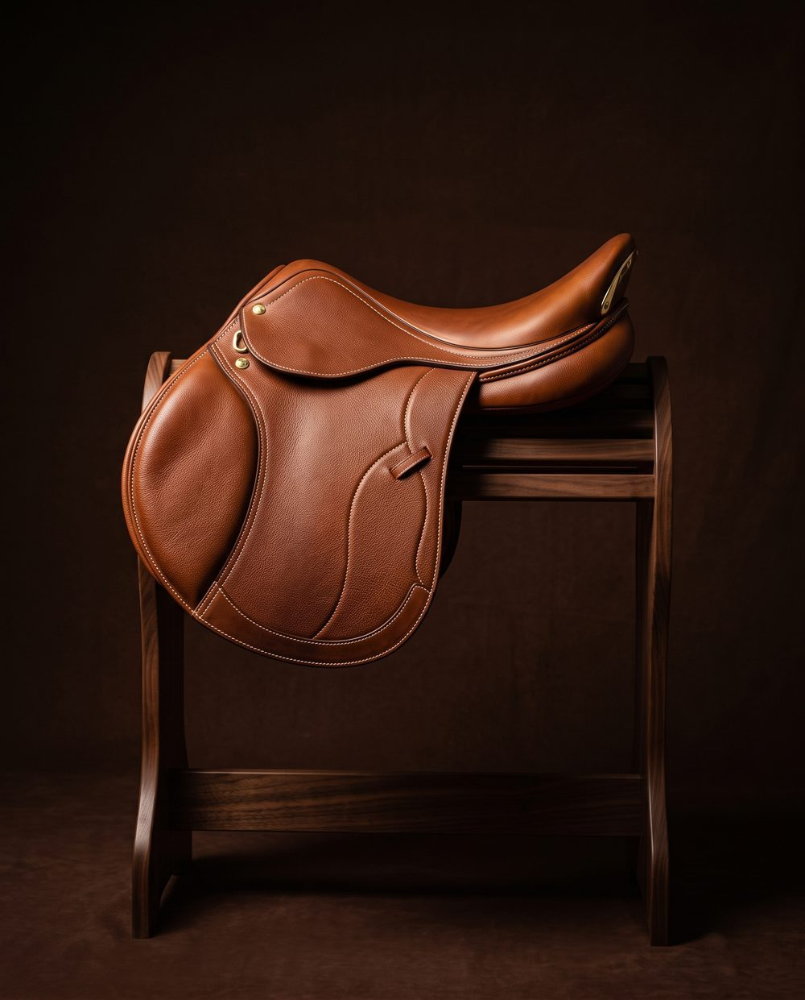
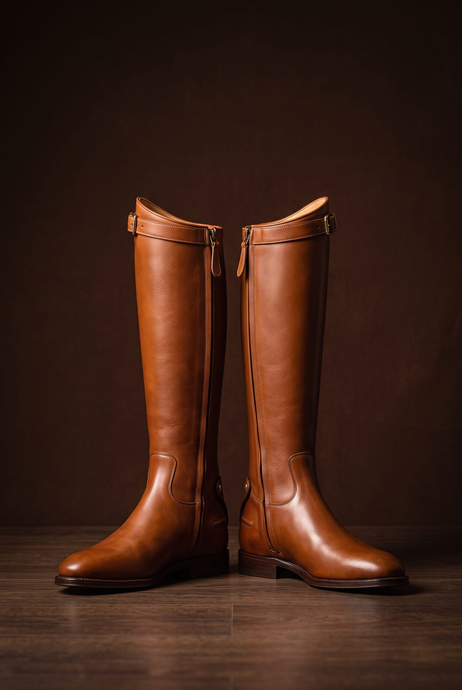
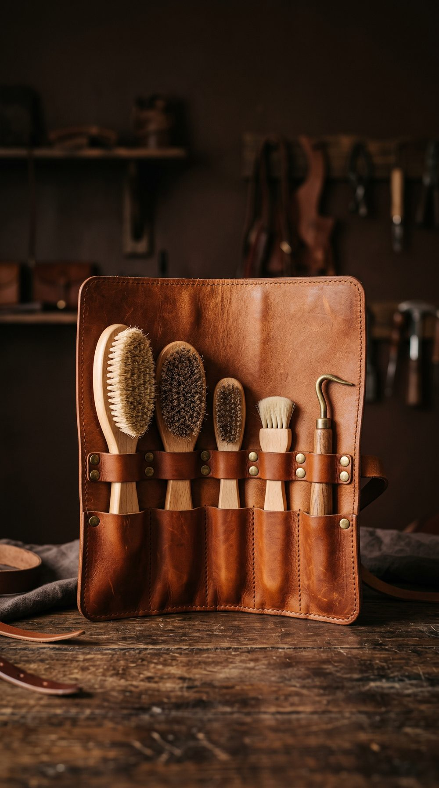
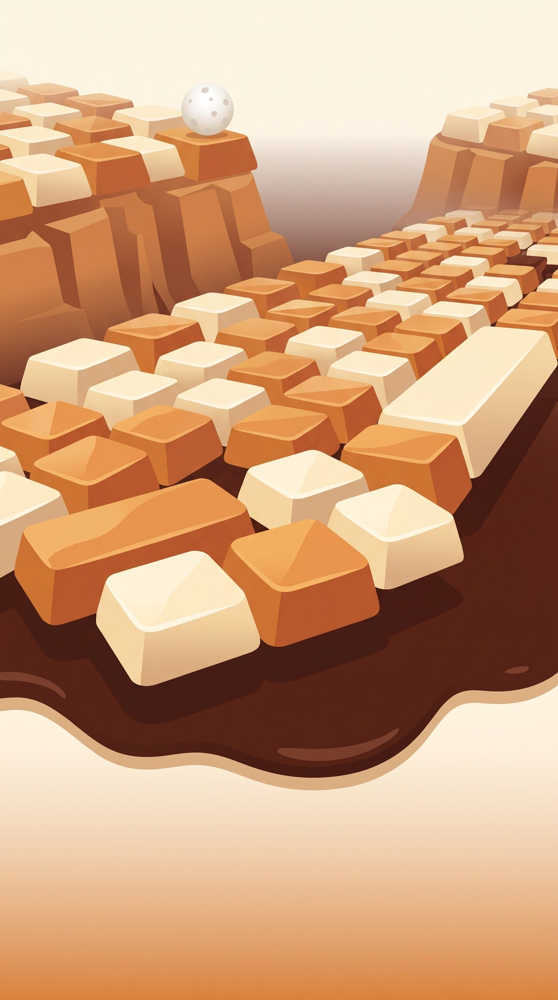
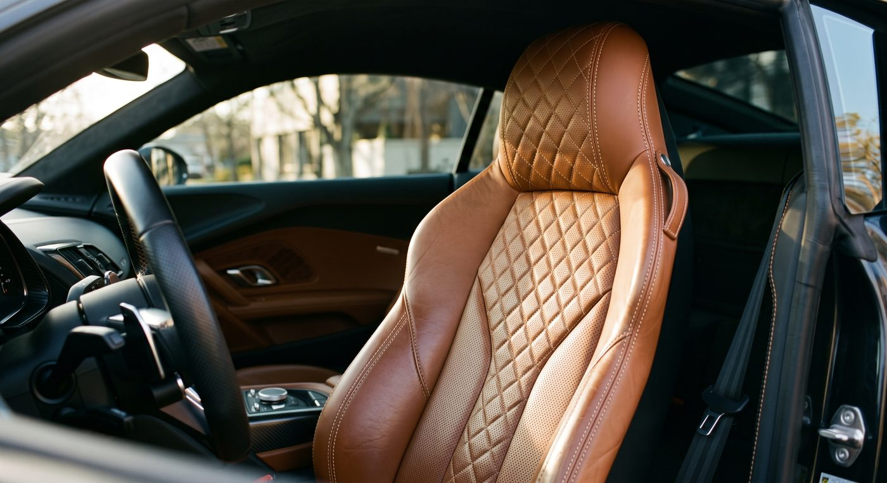
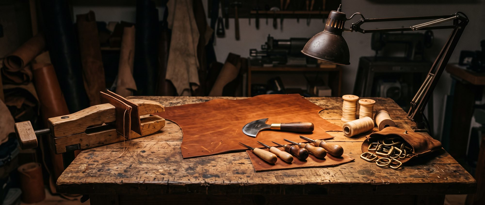

Selle mixte
Maremma
1 890 €
Du circuit à l’élégance
Le cuir d’un habitacle de sportive — pleine fleur, piqûre sellier, vingt ans de tenue — part à la benne avec la voiture. Nous allons le chercher, et nous le remontons en sellerie.
DécouvrezPremière série · 120 pièces numérotées
Quatre pièces, quatre noms toscans. Chacune porte le code du véhicule dont son cuir est né.

Selle mixte
1 890 €

Bottes d’équitation
460 €
Cravache de dressage
110 €

Besace de pansage
290 €
« Un cuir qui a tenu deux cent mille kilomètres n’a plus rien à prouver. »
Le manifeste HorseCo

Le noble · Zones de sécurité
Vachette pleine fleur tannée au végétal, à l’écorce de châtaignier, dans les tanneries de Santa Croce sull’Arno. Un cuir qui se patine, se répare et se recoud pendant trente ans.
Un cavalier confie son corps à sa selle. Alors partout où la charge passe — arçon, sanglons, étrivières — nous n’acceptons rien d’autre.

Le sauvé · Zones d’habillage
Sièges, contre-portes et accoudoirs déposés sur des véhicules hors d’usage, en priorité sur les berlines de prestige et les sportives : pleine fleur, piqûre sellier apparente, teintes fauves.
Un cuir choisi, tanné et testé en usine pour tenir vingt ans à la friction et au soleil. Il finissait broyé. Près d’un million et demi de VHU sont traités chaque année en France : la matière ne manque pas, c’est le geste de la récupérer qui manque.
L’épure
La règle est mécanique, pas commerciale : le cuir de Toscane suit le chemin de la charge.
L’atelier
Cinq étapes, dans cet ordre.
Convention avec des centres VHU agréés. Nous déposons les sièges avant dépollution et enregistrons le numéro du véhicule.
Découpe des coutures d’origine, retrait des mousses. Un panneau craquelé, percé ou brûlé part au rebut : nous conservons environ six panneaux sur dix.
Dégraissage à froid, nourrissage à l’huile de pied de bœuf, refinition mate. Aucun retannage : la peau garde le tannage reçu en usine.
Cuir de Toscane sur les zones de charge, point sellier double au fil de lin ciré sur toutes les jonctions structurelles.
Plaque laiton gravée : numéro de série, département et année du véhicule d’origine. La provenance devient l’argument, pas le défaut.
Engagement
Part moyenne de la surface cuir d’une pièce issue de sellerie automobile déposée.
Aucun mélange de lots : le cuir d’une pièce vient d’un seul véhicule, identifié sur la plaque.
Sur la partie récupérée. Ni chrome, ni bain de retannage : nettoyage et nourrissage seulement.
Toute couture reprise gratuitement à l’atelier, transport compris.

Étude de marché
Dix questions, quatre-vingt-dix secondes, en français et en anglais. Nous construisons la gamme, les prix et la distribution à partir de vos réponses — pas de nos intuitions.
Répondre · Take the survey